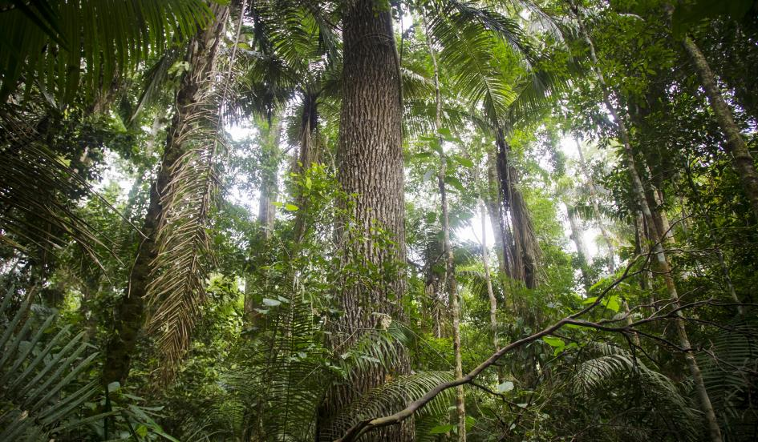

In the wild, the rubber tree will grow to heights of 100 to 130 feet, and can live up to 100 years. Its most famous feature is the milky white sap, known as latex, which flows freely from the tree when a sliver of bark is removed. A rubber tree, also referred to as rubberwood, can be tapped for latex once it reaches approximately six years of age. In order to reproduce, the fruit of the rubberwood burst open when ripe, scattering its many seeds in an area spanning up to 100 feet from the tree.
